彩虹眷村/台中市
彩虹眷村/台中市
ところ変わって台湾第三の都市、台中市。
以前は台中県と別に直轄地である台中市が存在していたのだが、いつの間にか台中県自体が台中市になっていた。
日本に置き換えてみると神奈川県がまんま横浜市になってしまったようなもので、不思議なハナシだし、市としては広すぎるだろ、という気もするがよくわかりません。
というわけで台湾高速鉄道の台中駅からも程近い彩虹眷村に向かった。
2007年に開業した台湾高速鉄道は日本の新幹線に相当するもので（実際、車両を含め日本の新幹線の技術が初めて海外に輸出されたケースとして有名）、在来線の台湾鉄道とは全く別の路線で運行している。
従って駅も街の中心部から全く離れた場所、つまり何にもない郊外にぽつ〜んとあるのだ。
ホラ日本でも新幹線の新駅とかって火星みたいなところにあるじゃないですか江刺●沢駅とか。あんな感じ。
そんな味気ない郊外に彩虹眷村はある。
彩虹眷村とは…
国共内戦後、国民党の人達が台湾に渡ってきた際、台湾のあちこちに国民党の人達が住む専用の街区が出来た。
ここ彩虹眷村もそんな古い国民党の街区であった。
現在、老朽化によって台湾中の国民党の街区が取り壊されている。彩虹眷村もその対象であった。
そのとき、住民である元軍人の黄さんという人が取り壊しを防ぐべく、突如街の壁や地面に絵を描きはじめたのだ。
そこに出現したのは「元軍人の90過ぎの老人」というカテゴリーを軽く吹っ飛ばす凄すぎる絵だった。
ポップでキッチュでカラフルでマッドでキュートでプリミティブでファンキーでファンシー。
そんな素敵な絵で覆われた夢のような街が出来上がっちゃったのだ。
今ではすっかり若者の人気スポットとなり、街は取り壊しを免れたそうな…。
めでたしめでたし。
…と、ココまでが事前のリサーチ情報。
実際、グーグルのストリートビューなどでは、カメラをぶら下げたアート大好きそうな若者などが狭い彩虹眷村に押し寄せている様子が見られる。
ところが行ってみてビックリ！
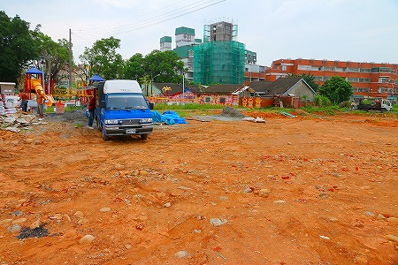
古い家屋が密集していた街区がまるごと更地になっちゃってるじゃないの！
見事なまでに何もない更地の向こうに異様にカラフルな建物が見える。
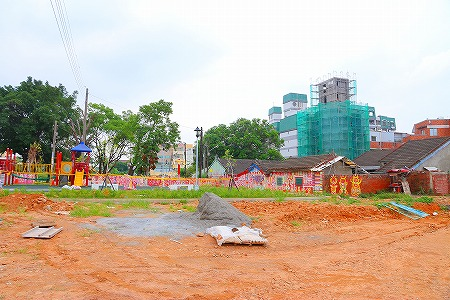
おおお、アレが彩虹眷村なのか！
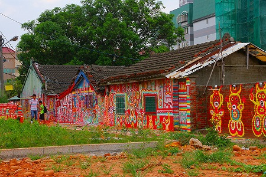
小雨が降る中、観光客は親子連れ一組のみ（と私たち）。
アートな若者や婚礼写真を撮りにくるような浮かれた若者など何処にもいないぞ。
ふと横を見れば半裸の土方兄貴達が台湾中どこにでもあるようなシケた公園遊具をくわえタバコで組み立て中。
狐につままれたような、とはまさにこの時の状態のこと。
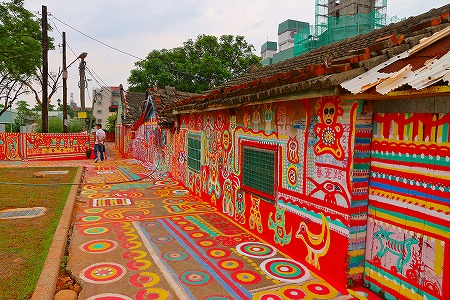
結局、黄爺さんが一生懸命描いた場所だけが「保存」され、それ以外の街区は全部取り壊された、ということだ。
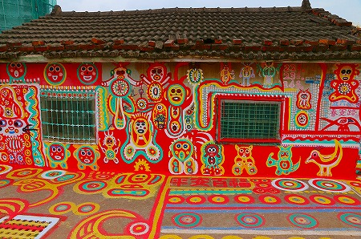
「残されるか壊されるか」の二者択一の覚悟で制作したであろう作者の黄爺さんにしてみれば予想外の結果だったに違いない。
ただ、当局にしてみれば、再開発は進むわ、開発後の観光名所を勝手に作ってくれるわ、「一石二鳥」の状況だったわけだ。
レジスタンスの絵が体制側の道具にすり替わる、なんとも皮肉な結果だ。
キースヘリング、バンクシー…お上はうわずみだけを掬ってしたり顔だよ。いつでもどこでも。
…っとすまん。愚痴っぽくなってしまって。
周囲は取り壊されてしまったが、それは逆にこの壮大なアートワークが今後も保存されることを意味する。
この恐ろしいまでの熱意がほとばしる爺さんの作品を存分に堪能しようではないか。
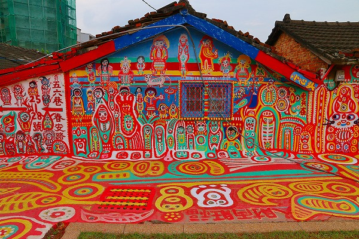
赤、青、白、黄、黒、桃、水色、紫、ライムグリーン…ほぼ全てがこの色だけで描かれている。
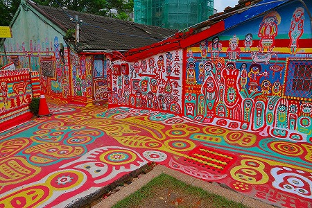
彩虹眷村とは言い得て妙だな。
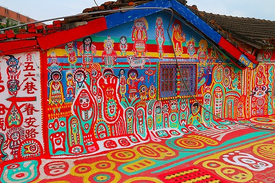
その混じりけのない潔い色と迷いのない太い線によって土着的な香りがプンプンの力強い世界が立ち上がっている。
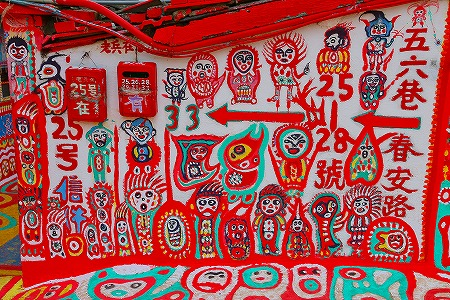
さらにひとつひとつのエレメントが強烈な正面性を持っているので、見ている方は常に真正面から見られているような重圧感を受ける。
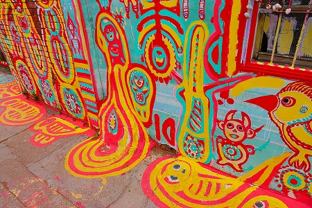
道路にまでビッチリ描かれているので作品に囲まれている感が半端ない。
おおお、見ているだけで段々高揚してきちゃうぞー！
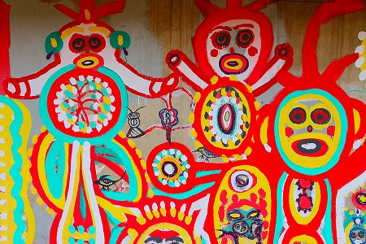
周囲の建物が残っていたらもっとカオスだっただろうに。
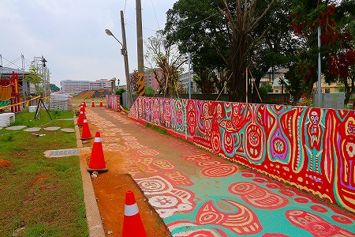
以前は住宅密集地場所だったようだが、今は荒野に建つド派手な家、といった風情になっている。
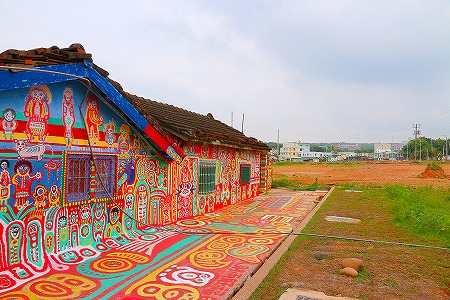
プリミティブなイラストが立て続けに描かれている。
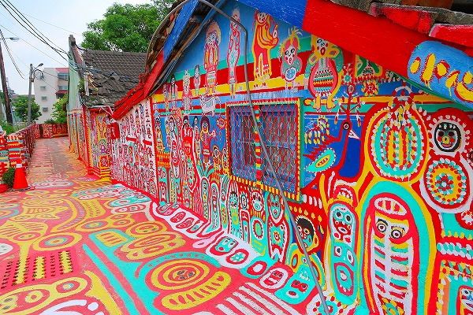
ここに描かれているキャラ全部商品化して欲しいレベルの完成度。
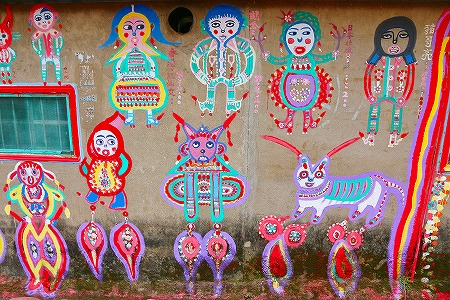
と、建物と建物の間にある小道に入ってみる。
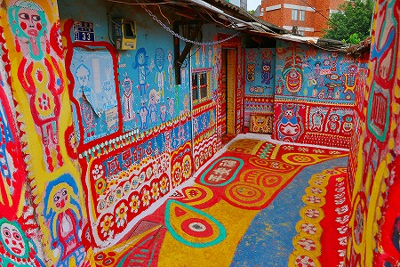
おおおおお！
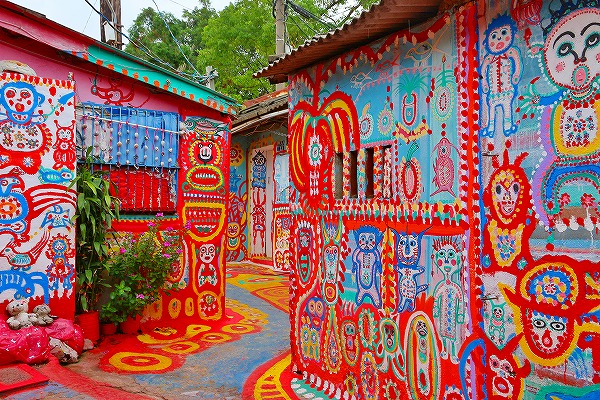
そこは全方位色の洪水に覆われていた。
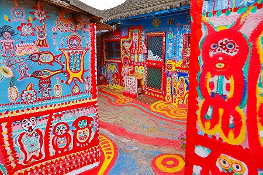
もう、うっとりしすぎて耳だれが止まりませんわー。
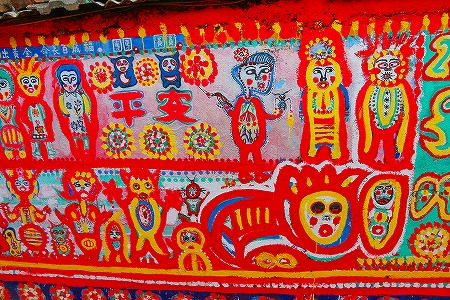
青いけどパンダです。
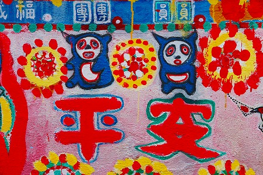
台湾には団団と圓圓という2頭のパンダが2008年に中国（大陸）からやってきている。
ちなみに2013年に赤ちゃんパンダが生まれ2014年はじめから一般公開されはじめたとか。
どこでもパンダは人気ですねえ。
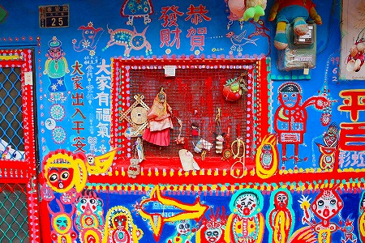
それにしても90歳の爺さまが手がけたとは思えないポップな仕上がり。
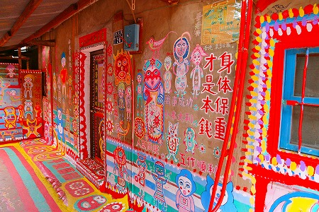
近くで見ると塗りムラも少ないしエッジも綺麗。
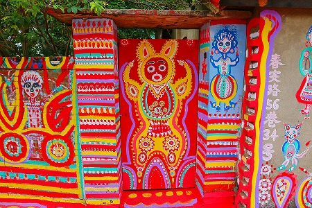
前のめり気味な疾走感はあるのだが、その手の描き急ぎ系のファストペインターと違って仕上げは丁寧だ。
文字も輪郭線を入れて見やすくしてあったり、細やかだ。
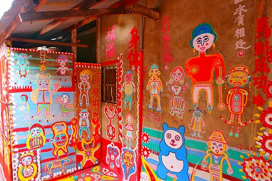
絵の上手い下手はともかく凄まじい情熱によって空間の圧力がどんどん高まっていくのを感じるのはヤバいほど気持ちいい。
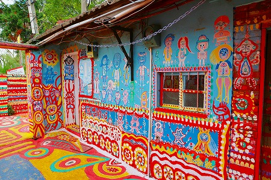
この異様なまでの高揚感、アシッド絵画と命名したい。
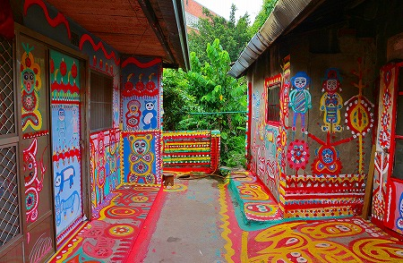
この辺のイラストとかオリジナルっぽいけど何かモチーフがあるのかな。
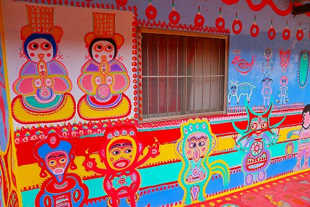
ああ、これはあの猫型ロボットか…
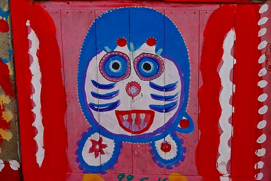
驚愕のカラフルワールドだが、家自体は老朽化が進んでおり、家の中や絵が途切れた部分からはどうしようもないリアルな姿が見え隠れしている。
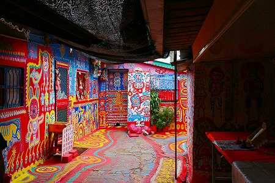
周囲の様子や建物の将来性などを考えると手放しでハアハア言ってる場合でもないのだが、だからこそこの素晴らしき宇宙に今はしばし酔いしれたい。
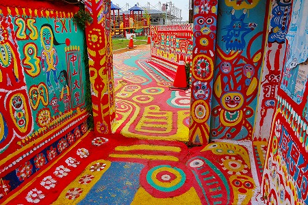
アッパーとダウナーな気分が交互に押し寄せる空間であった。
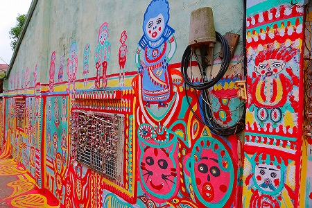
派手にペイントされた道路はぷつんと消え、その先には何もない。
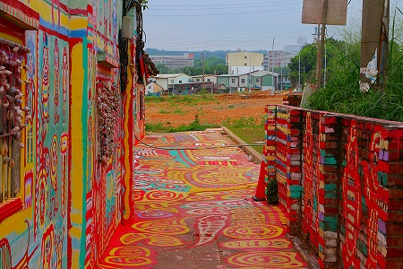
先には赤土の荒野が広がるばかり。
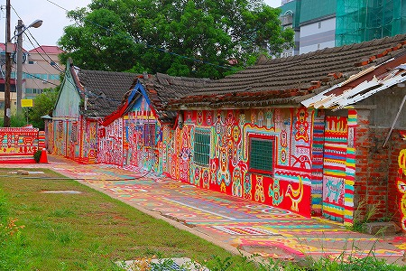
さしずめ20世紀に誕生した新手の遺跡、といった風になっちゃったねー。
珍寺大道場 HOME